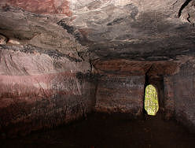

| In Deutsch |
| In Deutsch |
Daneilshöhle
Daneils' Cave
Useful Information
 |
| Image: all caves from the forecourt. |
| Location: |
In the Huy, north of Halberstadt.
From Röderhof 500m towards north, after the Röderhöfer Teich (lake) turn left, on paved road 200m to prohibition sign. Follow the single lane road straight ahead for 800m, cave on the left side. Signposted. The cave is also accessable from the Huysburg, about 1km. (51°57'45.83"N, 10°59'19.41"E) |
| Open: | no restrictions [2007] |
| Fee: | free [2007] |
| Classification: |
|
| Light: | none, bring electric torch |
| Dimension: | |
| Guided tours: | |
| Photography: | |
| Accessibility: | |
| Bibliography: | |
| Address: | |
| As far as we know this information was accurate when it was published (see years in brackets), but may have changed since then. Please check rates and details directly with the companies in question if you need more recent info. | |
| Last update: | $Date: 2015/11/20 13:16:21 $ |
History
Description
|  |
| Image: an almost rectangular room behind the right entrance. |
The Daneilshöhle was named after the legend of the robber Daneil, see the link below for the full story. Rather strange is the parallelism of this legend with the öegend of the robber Lippold in Lower Saxony.
 |
| Image: the hugest cave. |
The Daneil's Cave is located in a cliff of Creatceous sandstones. The cave was formed about 200,000 years ago, most liekly by the melting waters of the Ice Age. The huge amounts of water eroded this cave from the rather hard rocks, it is a socalled erosional cave.
The cave was changed very much by human activities. There are holes in the rock which obviously were used to frame wooden doors. It is obvious that this cave was inhabited for some time during the past. At least it was used as a barn or stable. Of course, the entrace has to be closed for any use. The cave is not a singe passage, but a series of three parallel caves with an entrance each. Behind the entrace is an almost rectanular chamber with a high ceiling.
The Huy is an almost 20km long mountain ridge, covered by a closed beech wood, located north of Halberstadt. It runs almost east west and was formed by halotectonic. In a depth of about 3,000m lies a layer of rock salt which becomes plasticity by the pressure and temperature and starts to flow slowly. Along weaknesses of the covering layers the lighter salt starts to ascend, similar to an air bubble in gelatine. In general this caused the creation of diapirs, which causes a sort of circular swelling on the surface by bending up the layers above. The Huy is not a circular hill, but a long ridge, which is caused by a salt wall, where the salt rises along a fracture for several kilometers, forming a huge wall.
The uplift by the salt takes a long time, long enough for erosion to continually remove the uplifted rocks. During the process deeper and older layers reach the surface and are found higher than the surrounding younger rocks. Hard layers tend to form cliffs and ridges.
 |
| Daneilshöhle Gallery |
 Lippoldshöhle
Lippoldshöhle Die Sage vom Räuber Daneil
(
Die Sage vom Räuber Daneil
( Search Google for "Daneilshöhle"
Search Google for "Daneilshöhle" Google Earth Placemark
Google Earth Placemark Die Daneilshöhle,
Röderhof im Huy.
(
Die Daneilshöhle,
Röderhof im Huy.
({kind=link}